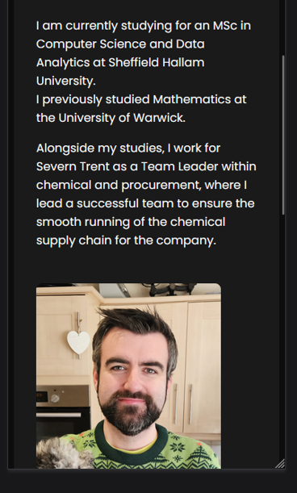

Week 3
This week I have been reviewing the mobile support for my web app. My main home page worked well when viewing it in mobile view. This uses centre alignment, set maximum widths and automatic margins. The links were already using flex display in the styles.css file.
This meant it flowed nicely and required no changes for mobile view.
The About Me page required some work to correct. Originally, I had the image of myself to the right of the About Me text while sitting on the same card. This worked on desktop but when viewed on mobile, the About Me text was compressed into a narrow column and the column for the picture left a lot of blank space.
This occurred because I was using a Flexbox layout for my About Me content. Flexbox uses a row by default, so the text and image were placed next to each other. As I had a fixed width for my photo, it left little space for the text on a smaller screen.
By adding the following code:
@media (max-width: 600px) {
.about-content {
flex-direction: column;
}
}I told the web app that when the browser width is 600px or less, the Flexbox layout should change from a row to a column. This means the text will appear above the photo instead of trying to fit them both next to each other.
I also changed the photo width to 100%, with a maximum width of 250px. This means the photo can scale down to fit the screen size but will never become larger than 250px.
Upon making these changes, the About Me page looks much improved and flows better on a mobile screen.
Before
After
